Vos sièges refaits dans les règles de l'art.
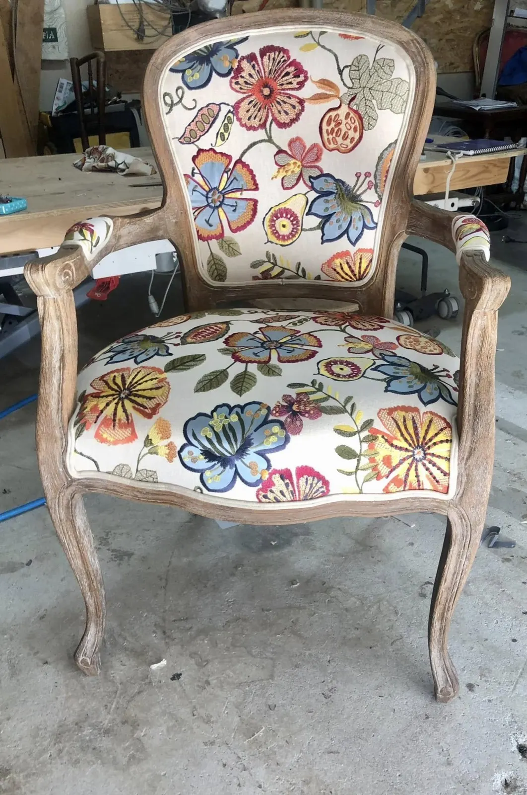
Fauteuil Louis XV, tissu à grosses fleurs.
Tapissière décoratrice installée à Coulombiers, dans la Vienne, finaliste au concours Meilleur Ouvrier de France 2018. Neuf et réfection : sièges et fauteuils en garniture traditionnelle au crin ou en mousse, sommiers et matelas, coussins et rideaux sur mesure.
- Finaliste MOF 2018Meilleur Ouvrier de France
- 5,0 sur 54 avis Google
- Devis gratuitpar téléphone ou par mail
- À domicilepour définir votre projet
- LSF possiblesur rendez-vous
Neuf et réfection, à l'atelier de Coulombiers.
Pour vos projets de restauration et de décoration dans la Vienne : Vivonne, Poitiers, Coulombiers, Lusignan, Biard.
Sièges et fauteuils
Chaises, fauteuils, canapés : réfection en garniture traditionnelle au crin, ou en mousse.
Rénovation de mobilier
Jusqu'à la remise en teinte du bois, comme pour ce lit cross Louis XV.
Sommiers et matelas
Quand ils ne sont plus confortables, ils se refont.
Coussins et rideaux
Création de coussins, rideaux et doubles rideaux, ou simplement un tissu à changer.
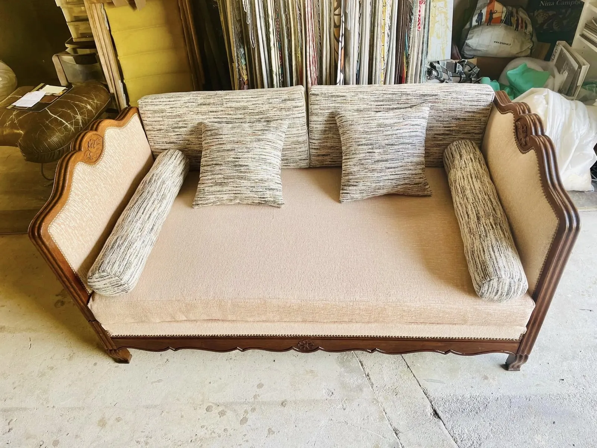
Banquette-lit, coussins et traversins sur mesure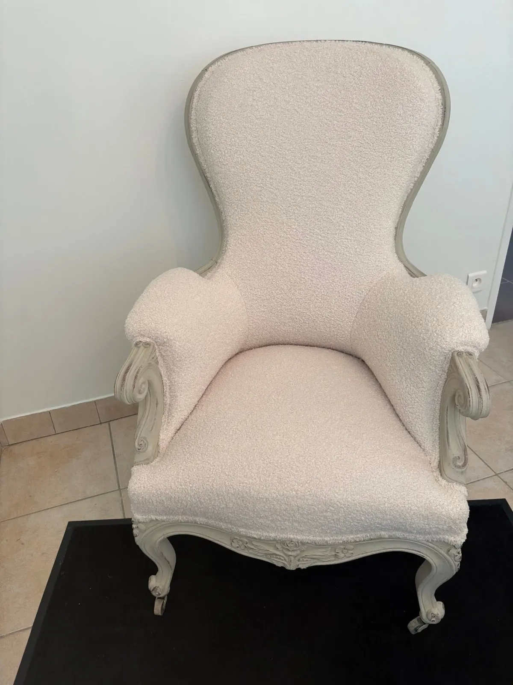
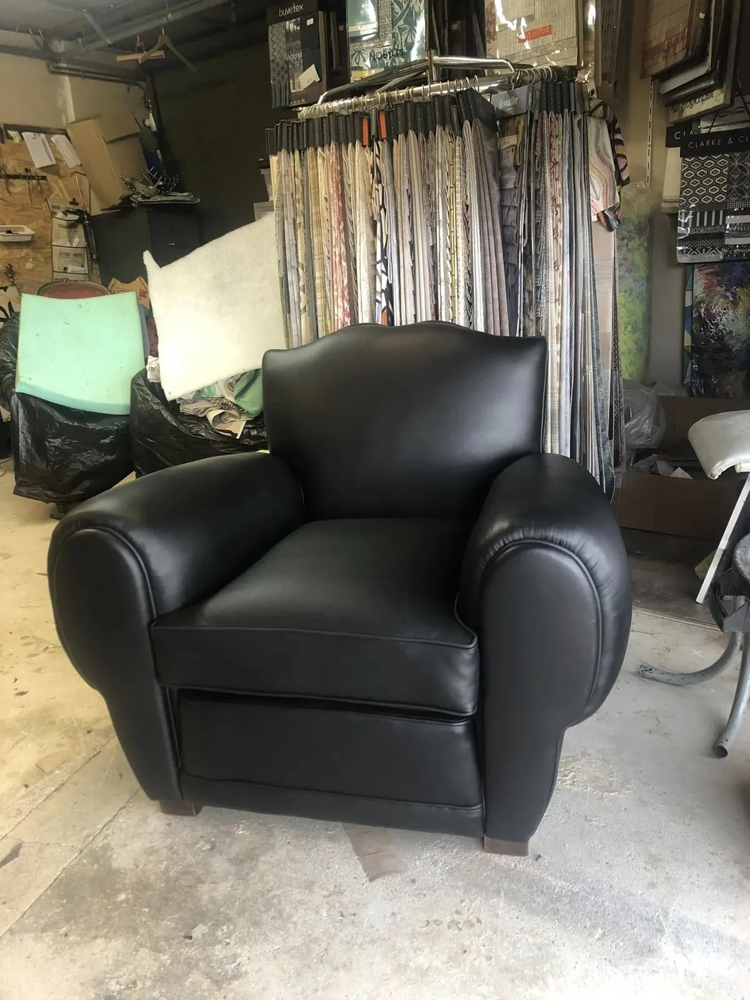
Crin ou mousse, tissu bouclé ou cuir.
Sièges, fauteuils, chaises, canapés à regarnir, un matelas qui n'est plus confortable, ou tout simplement l'envie de changer le tissu de vos coussins.
« Le travail est réalisé dans les règles de l'art. »
Du lit Louis XV au fauteuil de barbier.
Quelques pièces passées par l'atelier, du style ancien aux tissus les plus graphiques.
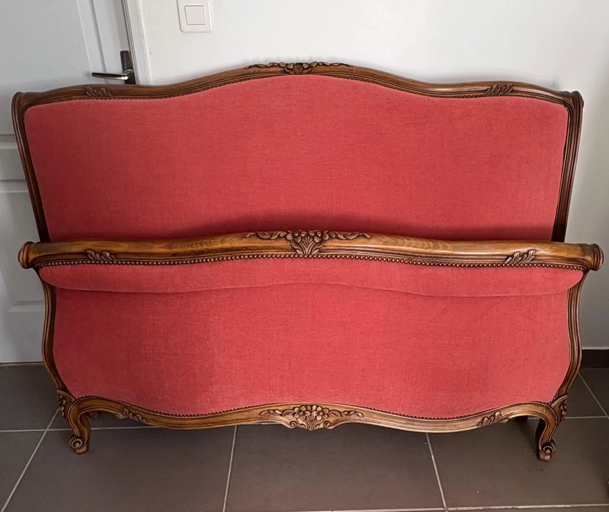
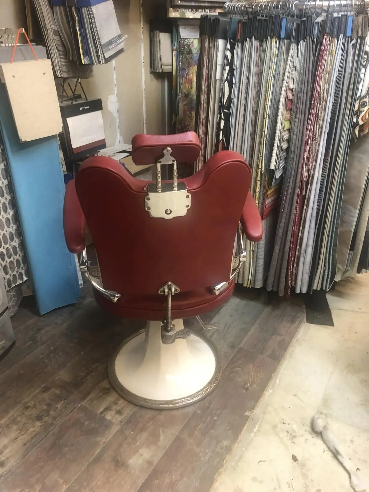
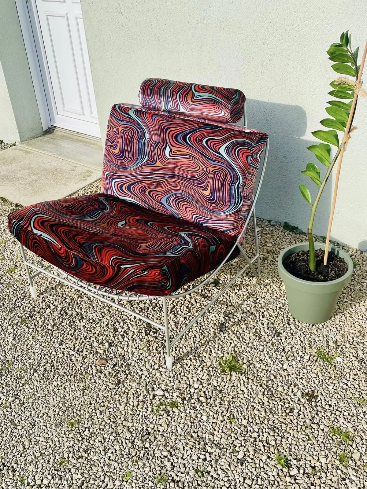
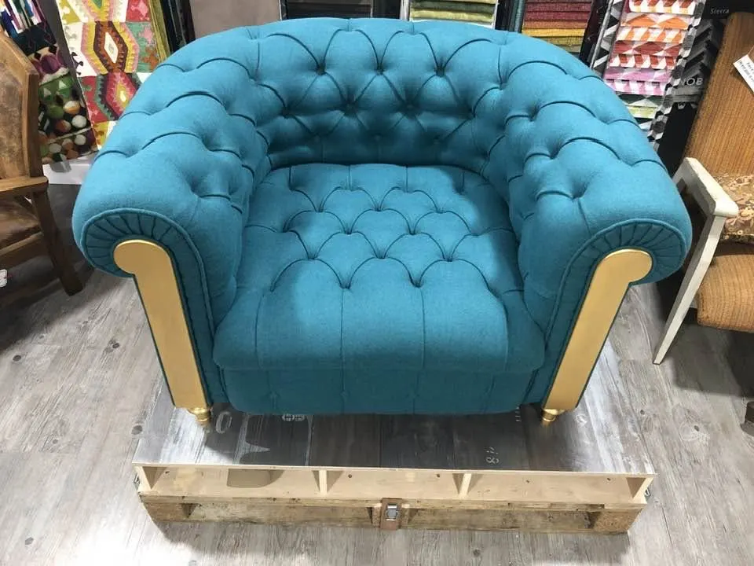
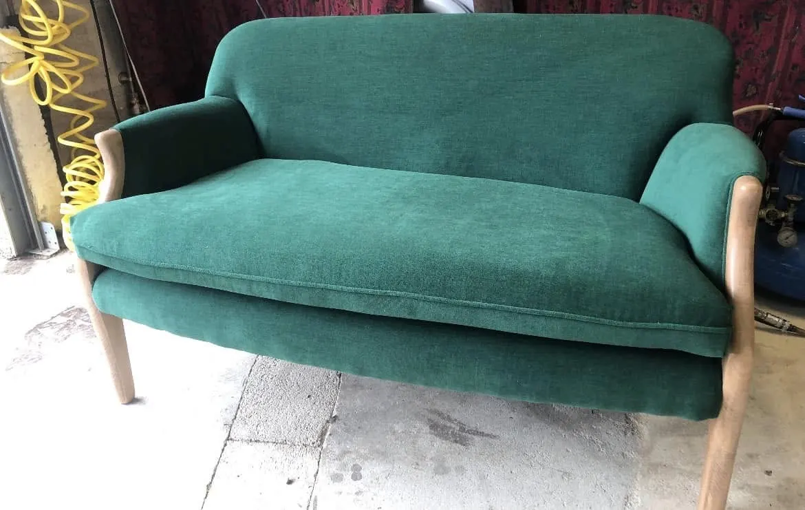
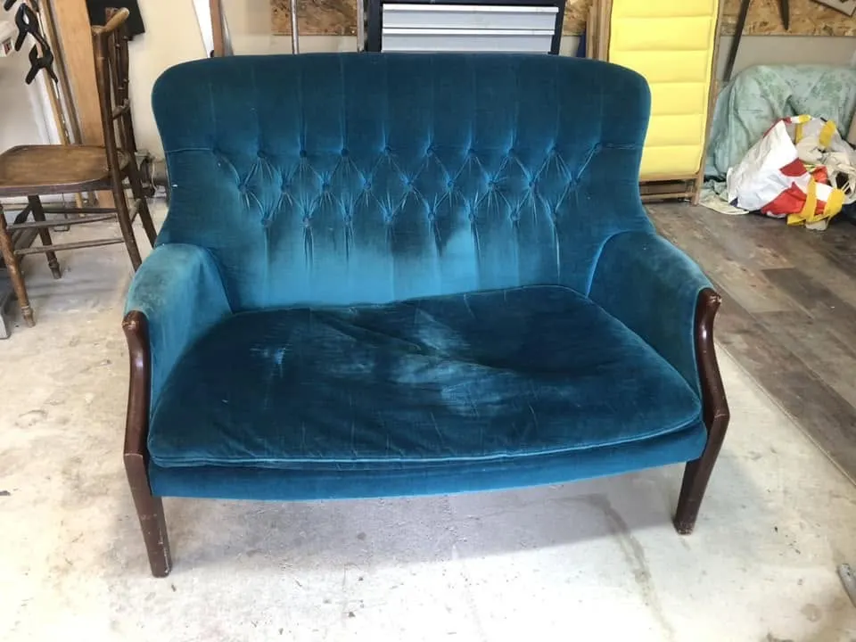
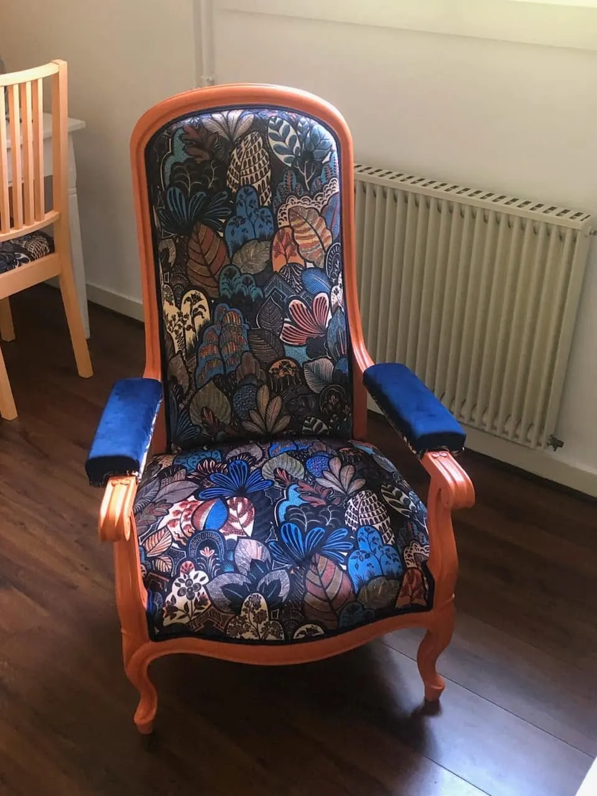
« Je vous accompagnerai tout au long de votre projet en m'adaptant à vos goûts et vos besoins. »Renaissance tapisserie décoration
Un rendez-vous chez vous
Je peux me déplacer à votre domicile pour définir avec vous vos besoins.
Un devis gratuit
Contactez-moi par téléphone, SMS, vidéo ou mail pour en parler.
En langue des signes
Une communication adaptée en LSF est possible, sur rendez-vous.
Parlons de votre siège.
Appelez, envoyez un SMS ou écrivez : nous pourrons convenir d'un rendez-vous.
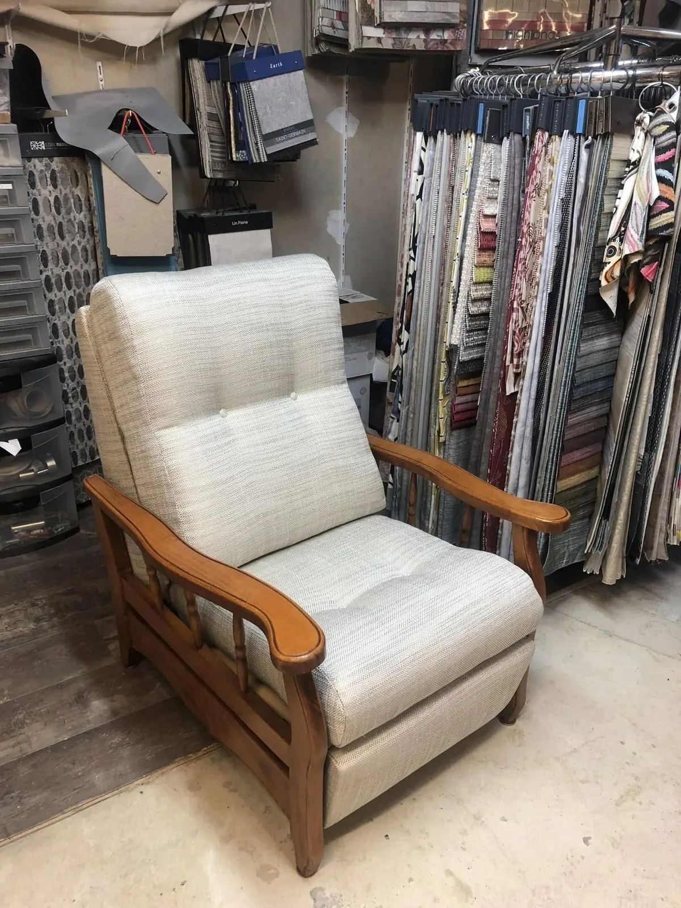
4 rue des Bruyères
86600 Coulombiers